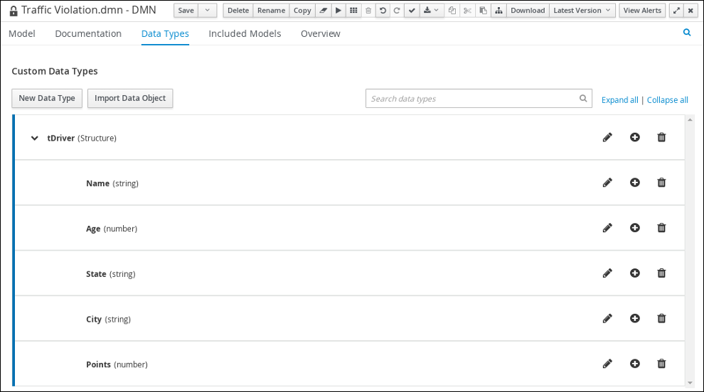
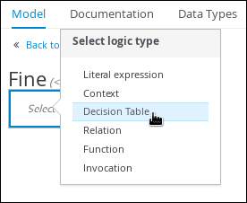

Getting Started
First Rule Project
This guide walks you through the process of creating a simple Drools application project.
Prerequisites
-
JDK 17+ with
JAVA_HOMEconfigured appropriately -
Apache Maven 3.8.6+
-
Optionally, an IDE, such as IntelliJ IDEA, VSCode or Eclipse
Creating a project with maven archetype
You can choose a style of rule project from Rule Unit or traditional style. Rule Unit is a new style that is recommended for microservices and cloud native applications. The traditional style has been used since Drools 7. Both styles are supported in Drools 10.
Rule Unit style
Create a project with the following command.
mvn archetype:generate -DarchetypeGroupId=org.kie -DarchetypeArtifactId=kie-drools-exec-model-ruleunit-archetype -DarchetypeVersion=10.0.0During the command execution, input property values interactively.
Define value for property 'groupId': org.example
Define value for property 'artifactId': my-project
Define value for property 'version' 1.0-SNAPSHOT: :
Define value for property 'package' org.example: :
...
Y: : Y
...
[INFO] BUILD SUCCESSNow your first rule project of Rule Unit is created. Let’s look into the project.
Firstly, pom.xml.
<dependency>
<groupId>org.drools</groupId>
<artifactId>drools-ruleunits-engine</artifactId>
</dependency>This is a required dependency for Rule Unit.
The archetype contains one DRL file as an example src/main/resources/org/example/rules.drl.
package org.example;
unit MeasurementUnit;
rule "will execute per each Measurement having ID color"
when
/measurements[ id == "color", $colorVal : val ]
then
controlSet.add($colorVal);
end
query FindColor
$m: /measurements[ id == "color" ]
endThis rule checks incoming Measurement data and stores its value in a global variable controlSet when it’s color information.
when part implements the pattern matching and then part implements the action when the conditions are met.
Next, find src/main/java/org/example/MeasurementUnit.java that is specified as unit MeasurementUnit in the rule. It is called rule unit that groups data sources, global variables and DRL rules.
public class MeasurementUnit implements RuleUnitData {
private final DataStore<Measurement> measurements;
private final Set<String> controlSet = new HashSet<>();
.../measurements in rules.drl is bound to the measurements field in MeasurementUnit. So you know that the inserted data type is Measurement. This class also defines a global variable controlSet.
Then, src/main/java/org/example/Measurement.java is a Java bean class used in the rule. Such an object is called Fact.
Finally, src/test/java/org/example/RuleTest.java is the test case that executes the rule. You can learn the basic API usage that is used in your own applications.
MeasurementUnit measurementUnit = new MeasurementUnit();
RuleUnitInstance<MeasurementUnit> instance = RuleUnitProvider.get().createRuleUnitInstance(measurementUnit);Create a MeasurementUnit instance. Then create a RuleUnitInstance with the MeasurementUnit instance using RuleUnitProvider.
measurementUnit.getMeasurements().add(new Measurement("color", "red"));
measurementUnit.getMeasurements().add(new Measurement("color", "green"));
measurementUnit.getMeasurements().add(new Measurement("color", "blue"));Add Measurement facts into measurementUnit.measurements. It means the facts are inserted into Drools rule engine.
List<Measurement> queryResult = instance.executeQuery("FindColor").stream().map(tuple -> (Measurement) tuple.get("$m")).collect(toList());Execute a query named FindColor. When you execute a query, rules that are matched with inserted facts are automatically fired. If you want to only fire rules without a query, you can call instance.fire() instead.
instance.close();At the end, call close() to release resources retained by the RuleUnitInstance.
Let’s run the test with mvn clean test.
[INFO] ------------------------------------------------------- [INFO] T E S T S [INFO] ------------------------------------------------------- [INFO] Running org.example.RuleTest 2022-06-13 12:49:56,499 [main] INFO Creating RuleUnit 2022-06-13 12:49:56,696 [main] INFO Insert data 2022-06-13 12:49:56,700 [main] INFO Run query. Rules are also fired [INFO] Tests run: 1, Failures: 0, Errors: 0, Skipped: 0, Time elapsed: 0.411 s - in org.example.RuleTest
Now you can add your own rules and facts to this project!
|
The rule project requires code generation that is triggered by mvn compile phase. If you directly run |
Traditional style
Create a project with the following command.
mvn archetype:generate -DarchetypeGroupId=org.kie -DarchetypeArtifactId=kie-drools-exec-model-archetype -DarchetypeVersion=10.0.0During the command execution, input property values interactively.
Define value for property 'groupId': org.example
Define value for property 'artifactId': my-project
Define value for property 'version' 1.0-SNAPSHOT: :
Define value for property 'package' org.example: :
...
Y: : Y
...
[INFO] BUILD SUCCESSNow your first rule project of traditional style is created. Let’s look into the project.
Firstly, pom.xml.
<dependency>
<groupId>org.drools</groupId>
<artifactId>drools-engine</artifactId>
</dependency>This is a required dependency for traditional style.
The archetype contains one DRL file as an example src/main/resources/org/example/rules.drl.
package org.example;
global java.util.Set controlSet;
rule "will execute per each Measurement having ID color"
when
Measurement( id == "color", $colorVal : val )
then
controlSet.add($colorVal);
endThis rule checks incoming Measurement data and stores its value in a global variable controlSet when it’s color information.
when part implements the pattern matching and then part implements the action when the conditions are met.
src/main/java/org/example/Measurement.java is a Java bean class used in the rule. Such an object is called Fact.
Finally, src/test/java/org/example/RuleTest.java is the test case that executes the rule. You can learn the basic API usage that is used in your own applications.
KieContainer kContainer = createKieContainer();
...
KieBase kieBase = kContainer.getKieBase();
...
KieSession session = kieBase.newKieSession();Create a KieContainer which collects resources. Then get a KieBase and creates a KieSession. KieSession is a unit of execution in Drools rule engine.
Set<String> check = new HashSet<String>();
session.setGlobal("controlSet", check);Set controlSet global to session.
Measurement mRed = new Measurement("color", "red");
session.insert(mRed);
session.fireAllRules();
Measurement mGreen = new Measurement("color", "green");
session.insert(mGreen);
session.fireAllRules();
Measurement mBlue = new Measurement("color", "blue");
session.insert(mBlue);
session.fireAllRules();Insert Measurement facts into session. Then fire all rules.
session.dispose();At the end, call dispose() to release resources retained by the KieSession.
Let’s run the test with mvn clean test.
[INFO] ------------------------------------------------------- [INFO] T E S T S [INFO] ------------------------------------------------------- [INFO] Running org.example.RuleTest 2023-10-03 12:27:29,182 [main] INFO Creating kieBase 2023-10-03 12:27:29,185 [main] INFO Start creation of KieBase: defaultKieBase 2023-10-03 12:27:29,293 [main] INFO End creation of KieBase: defaultKieBase 2023-10-03 12:27:29,293 [main] INFO There should be rules: 2023-10-03 12:27:29,294 [main] INFO kp [Package name=org.example] rule will execute per each Measurement having ID color 2023-10-03 12:27:29,294 [main] INFO Creating kieSession 2023-10-03 12:27:29,322 [main] INFO Populating globals 2023-10-03 12:27:29,322 [main] INFO Now running data 2023-10-03 12:27:29,348 [main] INFO Final checks [INFO] Tests run: 1, Failures: 0, Errors: 0, Skipped: 0, Time elapsed: 1.586 s - in org.example.RuleTest
Now you can add your own rules and facts to this project!
Getting started with decision services in Drools
As a business rules developer, you can use Drools to design a variety of decision services. This document describes how to create and test an example traffic violation project based on the Traffic_Violation sample project available from the Kogito Examples GitHub repository. This sample project uses a Decision Model and Notation (DMN) model to define driver penalty and suspension rules in a traffic violation decision service. You can follow the steps in this document to create the project and the assets it contains, or open and review the existing Traffic_Violation sample project. Alternatively, you may directly skip to the project evaluation by checking out locally the ready-made Traffic_Violation sample project from the link above, and jumping to the Evaluating the traffic violations DMN model with Drools section.
For more information about the DMN components and implementation in Drools, see DMN Engine in Drools section.
-
Having identified the target deployment platform, such as using Drools as an embedded Java library or Kogito for cloud-native platform
-
Having satisfied prerequisites of the target deployment platform
-
Considering deployment procedures of the target deployment platform while following this tutorial
Creating the traffic violations project from scratch
For this example, create a new project called traffic-violation in your IDE. A project is a container for assets such as data objects, DMN assets, and test scenarios. This example project that you are creating is similar to the existing Traffic_Violation sample project.
-
Follow the instruction depending on your IDE to create a new KJAR based Maven project.
Decision Model and Notation (DMN)
Decision Model and Notation (DMN) is a standard established by the Object Management Group (OMG) for describing and modeling operational decisions. DMN defines an XML schema that enables DMN models to be shared between DMN-compliant platforms and across organizations so that business analysts and business rules developers can collaborate in designing and implementing DMN decision services. The DMN standard is similar to and can be used together with the Business Process Model and Notation (BPMN) standard for designing and modeling business processes.
For general information about the background and applications of DMN, see the Drools DMN landing page.
Creating the traffic violations DMN decision requirements diagram (DRD)
A decision requirements diagram (DRD) is a visual representation of your DMN model. Use the KIE DMN Editor to design the DRD for the traffic violations project and to define the decision logic of the DRD components.
-
You have created the traffic violations project in Drools.
-
On the traffic-violation project’s home page, click Add Asset.
-
On the Add Asset page, click DMN. The Create new DMN window is opened.
-
In the Create new DMN window, enter
Traffic Violationin the DMN name field. -
From the Package list, select
com.myspace.traffic_violation. -
Click Ok. The DMN asset in the DMN designer is opened.
-
-
In the DMN designer canvas, drag two DMN Input Data input nodes onto the canvas.
 Figure 2. DMN Input Data nodes
Figure 2. DMN Input Data nodes -
In the upper-right corner, click the
 icon.
icon. -
Double-click the input nodes and rename one to
Driverand the other toViolation. -
Drag a DMN Decision decision node onto the canvas.
-
Double-click the decision node and rename it to
Fine. -
Click the Violation input node, select the Create DMN Information Requirement icon and click the
Finedecision node to link the two nodes.Figure 3. Create DMN Information Requirement icon -
Drag a DMN Decision decision node onto the canvas.
-
Double-click the decision node and rename it to
Should the driver be suspended?. -
Click the Driver input node, select the Create DMN Information Requirement icon and click the Should the driver be suspended? decision node to link the two nodes.
-
Click the Fine decision node, select the Create DMN Information Requirement icon, and select the Should the driver be suspended? decision node.
-
Click Save.
As you periodically save a DRD, the DMN designer performs a static validation of the DMN model and might produce error messages until the model is defined completely. After you finish defining the DMN model completely, if any errors remain, troubleshoot the specified problems accordingly.
Creating the traffic violations DMN custom data types
DMN data types determine the structure of the data that you use within a table, column, or field in a DMN boxed expression for defining decision logic. You can use default DMN data types (such as string, number, or boolean) or you can create custom data types to specify additional fields and constraints that you want to implement for the boxed expression values. Use the KIE DMN Editor’s Data Types tab to define the custom data types for the traffic violations project.

The following tables list the tDriver, tViolation, and tFine custom data types that you will create for this project.
| Name | Type |
|---|---|
tDriver |
Structure |
Name |
string |
Age |
number |
State |
string |
City |
string |
Points |
number |
| Name | Type |
|---|---|
tViolation |
Structure |
Code |
string |
Date |
date |
Type |
string |
Speed Limit |
number |
Actual Speed |
number |
| Name | Type |
|---|---|
tFine |
Structure |
Amount |
number |
Points |
number |
-
You created the traffic violations DMN decision requirements diagram (DRDs) using KIE DMN Editor.
-
To create the
tDrivercustom data type, click Add a custom Data Type on the Data Types tab, entertDriverin the Name field, and selectStructurefrom the Type list. -
Click the check mark to the right of the new data type to save your changes.
Figure 5. The tDriver custom data type -
Add each of the following nested data types to the
tDriverstructured data type by clicking the plus sign next totDriverfor each new nested data type. Click the check mark to the right of each new data type to save your changes.-
Name(string) -
Age(number) -
State(string) -
City(string) -
Points(number)
-
-
To create the
tViolationcustom data type, click New Data Type, entertViolationin the Name field, and selectStructurefrom the Type list. -
Click the check mark to the right of the new data type to save your changes.
 Figure 6. The tViolation custom data type
Figure 6. The tViolation custom data type -
Add each of the following nested data types to the
tViolationstructured data type by clicking the plus sign next totViolationfor each new nested data type. Click the check mark to the right of each new data type to save your changes.-
Code(string) -
Date(date) -
Type(string) -
Speed Limit(number) -
Actual Speed(number)
-
-
To add the following constraints to the
Typenested data type, click the edit icon, click Add Constraints, and select Enumeration from the Select constraint type drop-down menu.-
speed -
parking -
driving under the influence
-
-
Click OK, then click the check mark to the right of the Type data type to save your changes.
-
To create the
tFinecustom data type, click New Data Type, entertFinein the Name field, selectStructurefrom the Type list, and click Save. Figure 7. The tFine custom data type
Figure 7. The tFine custom data type -
Add each of the following nested data types to the
tFinestructured data type by clicking the plus sign next totFinefor each new nested data type. Click the check mark to the right of each new data type to save your changes.-
Amount(number) -
Points(number)
-
-
Click Save.
Assigning custom data types to the DRD input and decision nodes
After you create the DMN custom data types, assign them to the appropriate DMN Input Data and DMN Decision nodes in the traffic violations DRD.
-
You have created the traffic violations DMN custom data types in KIE DMN Editor.
-
Click the Model tab on the DMN designer and click the Properties
icon in the upper-right corner of the DMN designer to expose the DRD properties. -
In the DRD, select the Driver input data node and in the Properties panel, select
tDriverfrom the Data type drop-down menu. -
Select the Violation input data node and select
tViolationfrom the Data type drop-down menu. -
Select the Fine decision node and select
tFinefrom the Data type drop-down menu. -
Select the Should the driver be suspended? decision node and set the following properties:
-
Data type:
string -
Question:
Should the driver be suspended due to points on his driver license? -
Allowed Answers:
Yes,No
-
-
Click Save.
You have assigned the custom data types to your DRD’s input and decision nodes.
Defining the traffic violations DMN decision logic
To calculate the fine and to decide whether the driver is to be suspended or not, you can define the traffic violations DMN decision logic using a DMN decision table and context boxed expression.

-
You have assigned the DMN custom data types to the appropriate decision and input nodes in the traffic violations DRD in KIE DMN Editor.
-
To calculate the fine, in the DMN designer canvas, select the Fine decision node and click the Edit icon to open the DMN boxed expression designer.
 Figure 10. Decision node edit icon
Figure 10. Decision node edit icon -
Click Select expression → Decision Table.
Figure 11. Select Decisiong Table logic type -
For the Violation.Date, Violation.Code, and Violation.Speed Limit columns, right-click and select Delete for each field.
-
Click the Violation.Actual Speed column header and enter the expression
Violation.Actual Speed - Violation.Speed Limitin the Expression field." -
Enter the following values in the first row of the decision table:
-
Violation.Type:
"speed" -
Violation.Actual Speed - Violation.Speed Limit:
[10..30) -
Amount:
500 -
Points:
3Right-click the first row and select
Insert belowto add another row.
-
-
Enter the following values in the second row of the decision table:
-
Violation.Type:
"speed" -
Violation.Actual Speed - Violation.Speed Limit:
>= 30 -
Amount:
1000 -
Points:
7Right-click the second row and select
Insert belowto add another row.
-
-
Enter the following values in the third row of the decision table:
-
Violation.Type:
"parking" -
Violation.Actual Speed - Violation.Speed Limit:
- -
Amount:
100 -
Points:
1Right-click the third row and select
Insert belowto add another row.
-
-
Enter the following values in the fourth row of the decision table:
-
Violation.Type:
"driving under the influence" -
Violation.Actual Speed - Violation.Speed Limit:
- -
Amount:
1000 -
Points:
5
-
-
Click Save.
-
To define the driver suspension rule, return to the DMN designer canvas, select the Should the driver be suspended? decision node, and click the Edit icon to open the DMN boxed expression designer.
-
Click Select expression → Context.
-
Click ContextEntry-1, enter
Total Pointsas the Name, and selectnumberfrom the Data Type drop-down menu. -
Click the cell next to Total Points, select
Literal expressionfrom the context menu, and enterDriver.Points + Fine.Pointsas the expression. -
In the cell below Driver.Points + Fine.Points, select
Literal Expressionfrom the context menu, and enterif Total Points >= 20 then "Yes" else "No". -
Click Save.
You have defined how to calculate the fine and the context for deciding when to suspend the driver. You can navigate to the traffic-violation project page and click Build to build the example project and address any errors noted in the Alerts panel.
Test scenarios
Test scenarios in Drools enable you to validate the functionality of business rules and business rule data (for rules-based test scenarios) or of DMN models (for DMN-based test scenarios) before deploying them into a production environment. With a test scenario, you use data from your project to set given conditions and expected results based on one or more defined business rules. When you run the scenario, the expected results and actual results of the rule instance are compared. If the expected results match the actual results, the test is successful. If the expected results do not match the actual results, then the test fails.
You can run the defined test scenarios in a number of ways, for example, you can run available test scenarios at the project level or inside a specific test scenario asset. Test scenarios are independent and cannot affect or modify other test scenarios. You can run test scenarios at any time during project development in Drools.
You can import data objects from different packages to the same project package as the test scenario. Assets in the same package are imported by default. After you create the necessary data objects and the test scenario, you can use the Data Objects tab of the test scenarios designer to verify that all required data objects are listed or to import other existing data objects by adding a New item.
Testing the traffic violations using test scenarios
Use the test scenarios designer to test the DMN decision requirements diagrams (DRDs) and define decision logic for the traffic violations project.

-
You have successfully built the traffic violations project using Drools.
-
Create a new Test Scenario file in your IDE.
-
Enter
Violation Scenariosin the Test Scenario field. -
From the Package list, select
com.myspace.traffic_violation. -
Select
DMNas the Source type. -
From the Choose a DMN asset list, select the path to the DMN asset.
-
Click Ok to open the Violation Scenarios test scenario in the Test Scenarios designer.
-
-
Under Driver column sub-header, right-click the State, City, Age, and Name value cells and select Delete column from the context menu options to remove them.
-
Under Violation column sub-header, right-click the Date and Code value cells and select Delete column to remove them.
-
Enter the following information in the first row of the test scenarios:
-
Scenario description:
Above speed limit: 10km/h and 30 km/h -
Points (under Given column header):
10 -
Type:
"speed" -
Speed Limit:
100 -
Actual Speed:
120 -
Points:
3 -
Amount:
500 -
Should the driver be suspended?:
"No"Right-click the first row and select Insert row below to add another row.
-
-
Enter the following information in the second row of the test scenarios:
-
Scenario description:
Above speed limit: more than 30 km/h -
Points (under Given column header):
10 -
Type:
"speed" -
Speed Limit:
100 -
Actual Speed:
150 -
Points:
7 -
Amount:
1000 -
Should the driver be suspended?:
"No"Right-click the second row and select Insert row below to add another row.
-
-
Enter the following information in the third row of the test scenarios:
-
Scenario description:
Parking violation -
Points (under Given column header):
10 -
Type:
"parking" -
Speed Limit: leave blank
-
Actual Speed: leave blank
-
Points:
1 -
Amount:
100 -
Should the driver be suspended?:
"No"Right-click the third row and select Insert row below to add another row.
-
-
Enter the following information in the fourth row of the test scenarios:
-
Scenario description:
DUI violation -
Points (under Given column header):
10 -
Type:
"driving under the influence" -
Speed Limit: leave blank
-
Actual Speed: leave blank
-
Points:
5 -
Amount:
1000 -
Should the driver be suspended?:
"No"Right-click the fourth row and select Insert row below to add another row.
-
-
Enter the following information in the fifth row of the test scenarios:
-
Scenario description:
Driver suspended -
Points (under Given column header):
15 -
Type:
"speed" -
Speed Limit:
100 -
Actual Speed:
140 -
Points:
7 -
Amount:
1000 -
Should the driver be suspended?:
"Yes"
-
-
Click Save.
-
Click the Play icon to check whether the test scenarios pass or fail.
Figure 13. Test scenario execution result for the traffic violations exampleIn case of failure, correct the errors and run the test scenarios again.
Evaluating the traffic violations DMN model with Drools
The instructions to follow to evaluate the traffic violation DMN model depends on the chosen target deployment platform from the prerequisite.
For more details about available options to evaluate DMN models depending on the target deployment platform, make reference to: [dmn-execution-con_dmn-models].
Example: Drools DMN engine as an embedded library use
The following examples assumes Drools DMN engine is used as an embedded library in a given deployment platform.
The source code and unit test code for the Traffic_Violation DMN model is available when generating the Maven Archetype.
Create a project with the following command.
mvn archetype:generate -DarchetypeGroupId=org.kie -DarchetypeArtifactId=kie-drools-dmn-archetype -DarchetypeVersion=10.0.0During the command execution, input property values interactively.
Define value for property 'groupId': org.example
Define value for property 'artifactId': my-project
Define value for property 'version' 1.0-SNAPSHOT: :
Define value for property 'package' org.example: :
...
Y: : Y
...
[INFO] BUILD SUCCESSNow your first rule project is created. Let’s look into the project.
Firstly, pom.xml.
<dependency>
<groupId>org.kie</groupId>
<artifactId>kie-dmn-core</artifactId>
</dependency>
<dependency>
<groupId>org.drools</groupId>
<artifactId>drools-xml-support</artifactId>
</dependency>
<dependency>
<groupId>org.drools</groupId>
<artifactId>drools-model-compiler</artifactId>
</dependency>They are required dependencies for using Drools DMN engine as an embedded library.
The archetype contains the DMN file as an example src/main/resources/Traffic Violation.dmn, which was described at length in the previous sections.
Finally, src/test/java/org/example/TrafficViolationTest.java is the test case that evaluate the DMN model.
You can learn the basic API usage that is used in your own applications.
Map<String, ?> driver = of("Points", 2);
Map<String, ?> violation = of("Type", "speed", "Actual Speed", 120, "Speed Limit", 100);
DMNContext dmnContext = dmnRuntime.newContext();
dmnContext.set("Driver", driver);
dmnContext.set("Violation", violation);Create a DMNContext with some example test data for Driver and Violation InputData nodes in the DMN model; alternatively, you can supply your own Pojos.
LOG.info("Evaluating DMN model");
DMNResult dmnResult = dmnRuntime.evaluateAll(dmnModelUT, dmnContext);Evaluate the Traffic_Violation DMN model using the actual test data in the DMNContext.
LOG.info("Checking results: {}", dmnResult);
assertFalse(dmnResult.hasErrors());Check no error was reported while evaluating the Traffic_Violation DMN model.
assertEquals(DecisionEvaluationStatus.SUCCEEDED, dmnResult.getDecisionResultByName("Should the driver be suspended?").getEvaluationStatus());
assertEquals("No", dmnResult.getDecisionResultByName("Should the driver be suspended?").getResult());Check the result of the final decision Should the driver be suspended? is valorised as the string No.
Let’s run the test with mvn clean verify.
[INFO] -------------------------------------------------------
[INFO] T E S T S
[INFO] -------------------------------------------------------
[INFO] Running org.example.TrafficViolationTest
2022-08-29 16:11:44,539 [main] INFO Evaluating DMN model
2022-08-29 16:11:44,540 [main] INFO Checking results: DMNResultImpl{context={
Driver: {
Points: 2
}
Violation: {
Type: speed
Speed Limit: 100
Actual Speed: 120
}
Fine: {
Points: 3
Amount: 500
}
Should the driver be suspended?: No
}
, messages=org.kie.dmn.core.util.DefaultDMNMessagesManager@4f89331f}
[INFO] Tests run: 1, Failures: 0, Errors: 0, Skipped: 0, Time elapsed: 0.001 s - in org.example.TrafficViolationTest
Feel free to use this archetype-generate project as a basis by modifying the existing DMN model or creating brand new DMN models! The archetype also contain more advanced test cases, using the SceSim tool.
Example: Kogito as the target deployment platform
The following examples assumes Kogito is the chosen target deployment platform.
The source code and detailed runtime instructions for the Traffic_Violation sample project are readily made available for Kogito from the Kogito Examples GitHub repository.
-
Determine the base URL for accessing the REST API endpoints. This requires knowing the following values (with the default local deployment values as an example):
-
Host (
localhost) -
Port (
8080) -
REST path (none specific)
Example base URL in local deployment for the traffic violations project:
http://localhost:8080/Traffic Violation -
-
Determine user authentication requirements.
If users and roles are configured on the Kogito on Quarkus application, HTTP Basic authentication may be required with user name and password. Successful requests require that the user have the configured role.
The following example demonstrates how to add credentials to a curl request:
curl -u username:password <request>If the Kogito on Quarkus application is configured with Red Hat Single Sign-On, the request must include a bearer token:
curl -H "Authorization: bearer $TOKEN" <request> -
Execute the DMN model:
[POST]
Traffic%20ViolationExample curl request:
curl -L -X POST 'localhost:8080/Traffic Violation' \ -H 'Content-Type: application/json' \ -H 'Accept: application/json' \ --data-raw '{ "Driver": { "Points": 2 }, "Violation": { "Type": "speed", "Actual Speed": 120, "Speed Limit": 100 } }'Example JSON request:
{ "Driver": { "Points": 2 }, "Violation": { "Type": "speed", "Actual Speed": 120, "Speed Limit": 100 } }Example JSON response:
{ "Driver": { "Points": 2 }, "Violation": { "Type": "speed", "Actual Speed": 120, "Speed Limit": 100 }, "Fine": { "Points": 3, "Amount": 500 }, "Should the driver be suspended?": "No" }